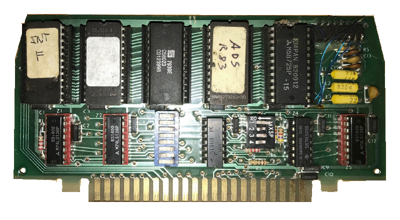
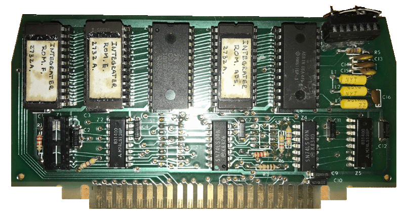
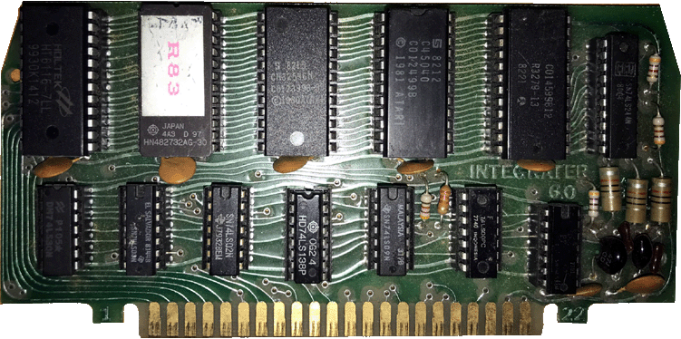

ADS Integrator OS
Boards
| The Integrator was
designed by David and Sandy Small. It
allowed the user the ability to configure
their Atari 800 to custom assign which
devices the computer would use: Atari Disk
Drives, Corvus Hard Disk Volumes and
RAMDisks. The User could assign
devices from Drives 1 to 8. You could
enter the Device Management screen at
anytime by pressing the OPTION key, setting
assignments and exiting the utility to be
returned back to exactly where you last
were, whether in DOS, Basic or a program
loaded.
The Full manual for this
OS board is available
HERE for download. |

Newell RAMROD Board #1 (Integrator
Modified) Click
HERE to
download the ROMs.

Newell RAMROD Board #2 (Integrator
Modified) Click
HERE to
download the ROMs.
* Note: It appears the ROMs A, E
and F on the 2 modified Newell RAMRODs appear to be the
same, and the ROM on the Integrator Rev 6.0 board appears to
also be the same as ROM A on the other boards, but is
located in the E position, but the INT 6.0 board is a much
different design. sThe Newell board #2 just has its
dipswitches removed and hardwired, but also has one of the
74LS138's removed and a 4.7k resistor is added between it
and the other remaining on the board 138.
The 2 above boards are modified versions
of the Newell RAMROD OS/Memory boards that were early
implementations of the Integrator ADS
Board.

This is the final
production version of the Integrator ADS board, version
6.0
Click
HERE to
download the ROM.